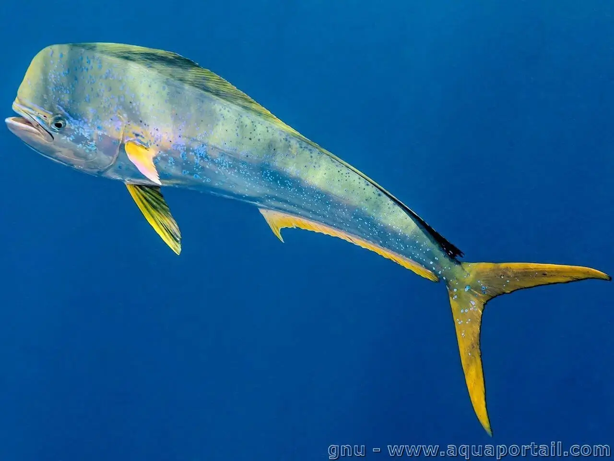

Coryphaena hippurus (Κυνηγός)

Ο κυνηγός της θάλασσας είναι το δελφινόψαρο ή mahi‑mahi, με επιστημονική ονομασία Coryphaena hippurus, ένα γρήγορο, μεταναστευτικό πελαγικό ψάρι με παγκόσμια εξάπλωση σε τροπικά και εύκρατα νερά.
Μορφολογία
Έχει έντονα επιμήκες, πλευρικά συμπιεσμένο σώμα, με πολύ μεγάλο μέτωπο (ιδίως στα αρσενικά), ένα μακρύ συνεχές ραχιαίο πτερύγιο και βαθιά διχαλωτή ουρά που το βοηθούν σε υψηλές ταχύτητες κολύμβησης. Το σώμα είναι έντονα χρωματισμένο με μπλε‑πράσινη ράχη και χρυσοκίτρινες πλευρές, με τα χρώματα να ξεθωριάζουν γρήγορα μετά τον θάνατο.
Πού το συναντάμε
Ο κυνηγός ζει σε επιφανειακά, ανοικτά πελαγικά νερά τροπικών και υποτροπικών ωκεανών, αλλά εμφανίζεται εποχικά και σε εύκρατες περιοχές, όπως η Μεσόγειος. Συνδέεται συχνά με επιπλέοντα αντικείμενα ή συσσωρεύσεις φυκιών Sargassum, συνήθως σε θερμοκρασίες περίπου 21–30 °C στην ανώτερη στήλη νερού.
Διατροφή
Είναι κορυφαίος θηρευτής που τρέφεται κυρίως με μικρά πελαγικά ψάρια (ιδίως ιπτάμενα ψάρια και άλλα κοπαδιάρικα είδη), αλλά καταναλώνει επίσης κεφαλόποδα και καρκινοειδή, δείχνοντας ευκαιριακή, μη επιλεκτική συμπεριφορά. Τα γρήγορα αναπτυσσόμενα άτομα έχουν υψηλή ημερήσια πρόσληψη τροφής και παίζουν σημαντικό ρόλο στη ροή ενέργειας στα πελαγικά οικοσυστήματα.
Συνθήκες εκτροφής
Το δελφινόψαρο θεωρείται πολλά υποσχόμενο είδος για θερμά υδάτινα συστήματα εκτροφής λόγω εξαιρετικά γρήγορης αύξησης, αλλά η παραγωγή του παραμένει κυρίως πειραματική. Πειράματα δείχνουν ότι η επιτυχής εκτροφή απαιτεί συστήματα ανακυκλοφορίας με θερμοκρασίες περίπου 26–27 °C, υψηλή οξυγόνωση, μεγάλες δεξαμενές για συνεχή κολύμβηση και πλούσια σε πρωτεΐνη τροφή (ψάρια, καλαμάρια ή αντίστοιχες βιομηχανικές τροφές), με προσοχή στη θνησιμότητα των ευαίσθητων προνυμφών.